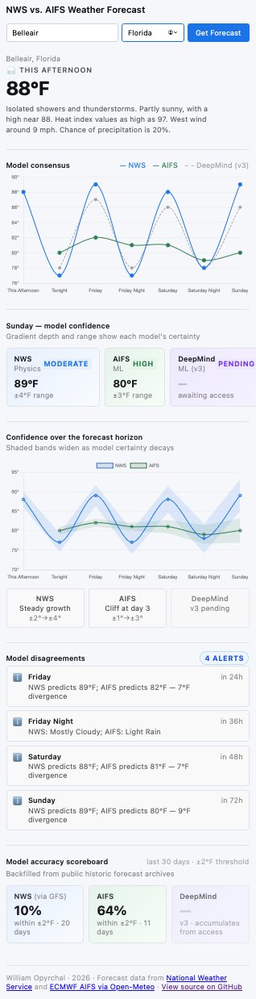

Case Study · 04
Is ML actually beating physics at weather?
A live evaluation system comparing physics-based and machine-learning weather forecasts — with disagreement alerts and a verified accuracy scoreboard.
Context
Weather forecasting just changed. For the first time, machine-learning models are producing operational forecasts that match or beat the physics-based numerical models the field has relied on for decades. Two leading approaches have emerged: ECMWF's Artificial Intelligence Forecasting System (AIFS) and Google DeepMind's WeatherNext.
That's a substantial claim. The interesting question isn't whether to believe it — it's how to check. Not on a research benchmark, but on real forecasts for real locations, day after day.
This project is an evaluation system: same location, three forecast sources displayed side by side, with divergences flagged automatically and the accuracy of each model tracked against ground truth over time.
The system
Three forecasts. One scoreboard.
The app pulls live forecasts for GFS and AIFS from Open-Meteo for a user-selected location and renders them side-by-side on shared axes — same horizon, same units, same time ranges. It then adds the third model, DeepMind WeatherNext, through scores pre-computed from Google BigQuery and served as static JSON, producing one three-model accuracy scoreboard verified against real Iowa Mesonet ASOS observations. Then it delivers three things a side-by-side viewer alone wouldn't:
1. A consensus view with confidence bands
Each model's forecast carries its own uncertainty. GFS and AIFS both display confidence bands derived from their ensemble member spread. These are rendered together so the user can see not only the predicted values but also how much uncertainty each model carries at different lead times. WeatherNext is not included in this view, as it only appears in the historic accuracy scoreboard.
2. Disagreement alerts
When GFS and AIFS predict materially different outcomes for the same day — for
example, GFS 89°F vs AIFS 82°F — the system surfaces the divergence as
an alert and shows the size of the difference. These are the cases that matter:
where the models agree is uninteresting; where they disagree is where at least one
of them is likely to be wrong.
3. A running accuracy scoreboard
The system scores GFS and AIFS on instantaneous 2m temperature at 18:00 UTC with
a +3-day lead time for any location a user searches. For a set of pre-supported
cities, it also includes WeatherNext using pre-computed scores, producing a
three-model comparison. All scores use mean absolute error in degrees Fahrenheit
and are verified against the nearest Iowa Mesonet ASOS observation to 18:00 UTC.
This metric was chosen because WeatherNext does not provide a daily maximum
temperature variable; 18:00 UTC instantaneous temperature is the single value that
GFS, AIFS, and WeatherNext all produce natively.
GFS · Physics
3.92°F
average error · six-city aggregate
AIFS · ML
3.02°F
average error · six-city aggregate
WeatherNext · GenCast
3.13°F
average error · six-city aggregate
Six-city aggregate over a 30-day warm-season window as of June 2026. One airport station per city. Early sample, not a long-term baseline. Metric changed on June 15, 2026 from daily maximum temperature to instantaneous 2m temperature at 18:00 UTC; scores from before that date used a different metric and are not comparable. WeatherNext is an experimental model and not approved for operational or safety-critical use. These results are for research and comparison purposes only.

Workflow
Build fast. Verify slowly.
This project was a deliberate experiment in a different AI-assisted workflow than the design-first approach I used on AskMickey. The goal: see how fast I could ship a working evaluation system using AI tools heavily for code generation — and what discipline I'd need to keep the result trustworthy.
The answer to the second question turned out to matter more than the first. Producing code quickly with an AI assistant is easy. Knowing whether the code does what you asked it to is the engineering work — and on an evaluation system, that work compounds: every claim the app makes about model accuracy has to be traceable to data you can defend.
The discipline wasn't in the writing. It was in the verification — checking each piece against the source data, the actual API responses, and the rendered output before trusting it.
Concretely, that meant:
- API responses inspected directly against documentation — never trusted from AI-generated handler code alone.
- Forecast values cross-checked against the official GFS and ECMWF outputs before render.
- Unit and timezone conversions tested with edge cases — the single largest source of silent bugs in any weather application.
- Accuracy scoring methodology validated against a small hand-checked sample before backfilling at scale.
- The "model accuracy scoreboard" numbers are reproducible from public historic archives — anyone can rerun the scoring.
- Iowa Mesonet's API silently excludes the end date from a requested date range — no error, just a missing day of ground truth. Manual comparison of expected versus returned record counts caught it.
- Open-Meteo's AIFS archive retroactively revises historic forecasts without notice — scores computed one day could silently change the next. Comparing values across runs caught the drift and prompted switching WeatherNext to static pre-computed JSON rather than relying on a live archive.
The result is a system I can defend, built faster than I could have built it alone. But the speed of the build isn't the takeaway — the discipline of the verification is. That's the part of AI-assisted development that generalizes.
Front-end
- JavaScript
- HTML / CSS
- Custom chart rendering
Data sources
- Open-Meteo (GFS + AIFS)
- Google BigQuery (WeatherNext)
- Iowa Mesonet ASOS (ground truth)
- NWS API (location lookup)
Evaluation
- Historic-archive backfill
- MAE at 18:00 UTC, +3-day lead
- Disagreement detection
Workflow
- AI-assisted code generation
- Verification loop discipline
- GitHub Pages, static only
Artifacts